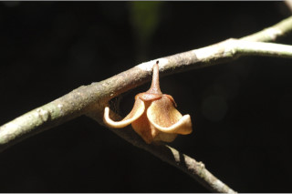
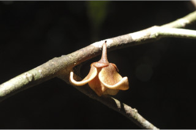

Small trees, 5-7 m tall.
5 ರಿಂದ 7ಮೀ ಎತ್ತರದವರೆವಿಗೆ ಬೆಳೆಯುವ ಸಣ್ಣ ಮರಗಳು
5 മുതല് 7 മീറ്റര് വരെ ഉയരത്തില് വളരുന്ന ചെറുമരങ്ങള്.
சிறிய மரம் 5-7 மீ. உயரம் வரை வளரக்கூடியது.
Branchlets glabrous, young branches puberulous.
ಕಿರುಕೊಂಬೆಗಳು ರೋಮರಹಿತವಾಗಿದ್ದು, ಎಳೆಯ ಕವಲುಗಳು ಸೂಕ್ಷ್ಮವಾದ ಮೃದುತುಪ್ಪಳ ಸಹಿತವಾಗಿರುತ್ತವೆ.
ഉപശാഖകള് ചെറുതായി രോമിലമാണ്.
சிறிய நுனிக்கிளைகள் உரோமங்களற்றது, புதிதாக தோன்றிய கிளைகளில் மெல்லிய உரோமங்களுடையது.
Leaves simple, alternate, distichous; petioles 0.6-1 cm long, canaliculate, glabrous; lamina 8-22 x 4-4.5 cm, linear-lanceolate, apex shortly acuminate, base cuneate, coriaceous, glabrous, often black dotted beneath; midrib canaliculate above; secondary_nerves 13-25 pairs, slender, looped at margin; tertiary_nerves coarsely reticulate, not prominent.
ಎಲೆಗಳು ಸರಳವಾಗಿದ್ದು, ಪರ್ಯಾಯ ಜೋಡನಾ ವ್ಯವಸ್ಥೆಯಲ್ಲಿದ್ದು ಕಾಂಡದ ಎರಡೂ ಕಡೆ ಎದುರು ಬದರಿನ ಲಂಬಸಾಲಿನಲ್ಲಿರುತ್ತವೆ. ತೊಟ್ಟುಗಳು 0.6 ರಿಂದ 1 ಸೆಂ.ಮೀ. ಉದ್ದವಿದ್ದು ಕಾಲುವೆಗೆರೆ ಸಹಿತವಾಗಿದ್ದು ರೋಮರಹಿತವಾಗಿರುತ್ತವೆ; ಎಲೆ ಪತ್ರ 8 - 22 × 4 - 4.5 ಸೆಂ.ಮೀ. ಇದ್ದು ರೇಖಾತ್ಮಕ-ಭರ್ಜಿಯಾಕಾರದಲ್ಲಿರುತ್ತದೆ, ತುದಿ ಕ್ರಮೇಣ ಚೂಪಾಗುವ ಮಾದರಿಯಲ್ಲಿದ್ದು, ಬುಡ ಬೆಣೆಯಾಕಾರದಲ್ಲಿರುತ್ತದೆ. ಎಲೆ ಪತ್ರರೋಮರಹಿತ, ಮೇಲ್ಮೈ ಕಾಗದದ ಮಾದರಿಯಲ್ಲಿದ್ದು ಸಾಮಾನ್ಯವಾಗಿ ತಳಭಾಗದಲ್ಲಿ ಕಪ್ಪು ಚುಕ್ಕೆಗಳಿಂದ ಕೂಡಿರುತ್ತದೆ. ಮಧ್ಯನಾಳ ಪತ್ರದ ಮೇಲ್ಭಾಗದಲ್ಲಿ ಕಾಲುವೆಗೆರೆ ಸಮೇತವಾಗಿರುತ್ತದೆ; ಎರಡನೇ ದರ್ಜೆಯ ನಾಳಗಳು 13 ರಿಂದ 25 ಜೋಡಿಗಳಿದ್ದು ತೆಳುವಾಗಿದ್ದು ಪತ್ರ ಅಂಚಿನಲ್ಲಿ ಕುಣಿಕೆಗೊಳ್ಳುತ್ತವೆ. ತೃತೀಯ ದರ್ಜೆಯ ನಾಳಗಳು ಸ್ಥೂಲವಾದ ಜಾಲಬಂಧನಾಳ ವಿನ್ಯಾಸದಲ್ಲಿದ್ದು, ಪ್ರಮುಖವಾಗಿ ಗೋಚರಿಸುವುದಿಲ್ಲ.
ലഘുവായ ഇലകള്, ഏകാന്തരക്രമത്തില് തണ്ടിന്റെ ഇരുഭാഗത്തു മാത്രമായി അടുക്കിയിരിക്കുന്നു; ചാലോട്കൂടിയ, അരോമിലമായ, ഇലഞെട്ടിന് 0.6 മുതല് 1 സെ.മീ വരെ നീളം; പത്രഫലകത്തിന് 8 മുതല് 22 സെ.മീ വരെ നീളവും 4 മുതല് 4.5 സെ.മീ വരെ വീതിയും, രേഖാകാര-കുന്താകാരം, ചെറിയ വാലോടുകൂടിയ പത്രാഗ്രം, പത്രാധാരത്തിന് ആപ്പിന്റെ ആകൃതി, ചര്മ്മില പ്രകൃതം, അരോമിലം, കീഴ്ഭാഗത്ത് കറുത്ത കുത്തുകളോട് കൂടിയതാണ്; മുഖ്യനിര മുകള്ഭാഗത്ത് ചാലോട് കൂടിയതാണ്; അരികുകള്ക്കടുത്തായി കമാനം തീര്ക്കുന്ന, നേര്ത്ത, 13 മുതല് 25 ജോഡി ദ്വിതീയ ഞരമ്പുകള്; അത്ര വ്യക്തമല്ലാത്ത, ക്രമരഹിതമായ ജാലിക തീര്ക്കുന്ന ത്രിതീയ ഞരമ്പുകള്.
இலைகள் தனித்தவை, மாற்றுஅடுக்கமானவை, இருநெடுக்கு வரிசையிலையடுக்கம் (டைஸ்டிக்கஸ்); இலைக்காம்பு 0.6-1 செ.மீ, நீளமானது, இலைக்காம்பு குறுக்குவெட்டுத் தோற்றத்தில் கேனாலிகுலேட், உரோமங்களற்றது; இலை அலகு 8-22 X 4-4.5 செ.மீ. கோட்டு-ஈட்டி வடிவ இலைகள், அலகின் நுனி சிறிய அதிக்கூரியது, அலகின் தளம் ஆப்பு வடிவம், கோரியேசியஸ், கீழ்பரப்பு உரோமங்களற்றது, கீழ்பரப்பில் கரும்புள்ளிகள் காணப்படும்; மையநரம்பு மேற்பரப்பில் அலகின் பரப்பைவிட பள்ளமானது; இரண்டாம் நிலை நரம்புகள் 13-25 ஜோடிகள்; மூன்றாம் நிலை நரம்புகள் அகன்ற வலைபின்னல், தெளிவற்றது.
Flowers solitary, axillary, purple with yellow tinge; pedicels 7-12 mm long, pubescent.
ಹೂಗಳು ಹಳದಿ ಛಾಯೆಯುಳ್ಳ ಕೆನ್ನೀಲಿ ಬಣ್ಣ ಹೊಂದಿದ್ದು, ಅಕ್ಷಾಕಂಕುಳಿನಲ್ಲಿ ಒಂಟಿಯಾಗಿರುತ್ತವೆ. ಹೂ ತೊಟ್ಟುಗಳು 7 - 12ಮಿ.ಮೀ. ಉದ್ದವಿದ್ದು ಮೃದು ತುಪ್ಪಳದಿಂದ ಕೂಡಿರುತ್ತವೆ.
കക്ഷങ്ങളില് ഒറ്റക്കായി ഉണ്ടാകുന്ന, മഞ്ഞരാശി കലര്ന്ന ഊത നിറത്തിലുള്ള പൂക്കള്; രോമിലമായ പൂന്തുകള്ക്ക് 7 മുതല് 12 മി.മീറ്റര് വരെ നീളം.
மலர்கள் தனியானது, இலைக்கோணங்களில் அமைந்தவை, பர்புள் கலந்த மஞ்சள் நிறமானது; மலர்காம்பு 7-12 மி.மீ. நீளமானது, உரோமங்களுடையது.
Aggregated 1-seeded berry, nearly sessile, ellipsoid, apex apiculate, 1.5-2.5 cm long, glabrous, yellowish when ripe.
ಬಹುಮಟ್ಟಿಗೆ ತೊಟ್ಟುರಹಿತವಾದ ಒಂದು ಬೀಜವುಳ್ಳ ಬೆರ್ರಿಗಳು ಬುಗುರಿಯಾಕಾರದಲ್ಲಿದ್ದು, ತುದಿಯಲ್ಲಿ ಸೂಕ್ಷ್ಮ ಮೊನಚನ್ನು ಹೊಂದಿದ್ದು ಸಾಮೂಹಿಕವಾಗಿರುತ್ತವೆ, ಬೆರ್ರಿಗಳು 1.5 ರಿಂದ 2.5 ಸೆಂ.ಮೀ. ಉದ್ದವಿದ್ದು ರೋಮರಹಿತವಾಗಿದ್ದು, ಹಣ್ಣಾದಾಗ ಹಳದಿ ಬಣ್ಣದ್ದಾಗಿರುತ್ತದೆ.
ഏതാണ്ട് അവൃന്തമായ, ഒറ്റവിത്തുള്ള, സഞ്ചിത, സരസഫലം, 1.5 മുതല് 2.5 സെ.മി വരെ നീളമുള്ളതും, അരോമിലമായതും അറ്റം മുനമ്പോടുകൂടിയതുമായ ദീര്ഘഗോളാകാരമാണിതിന്, മൂക്കുമ്പോള് മഞ്ഞനിറമാകും.
ஒரு விதையுள்ள திரள் முழுச்சதைகனி (பெர்ரி) கனிகள், காம்பற்ற கனிகள், நீள்வட்டம், நுனி அலகுடையது, 1.5-2.5 செ.மீ. நீளமானது, உரோமங்களற்றது, பழுத்த கனி மஞ்சள் நிறமானது.

 
